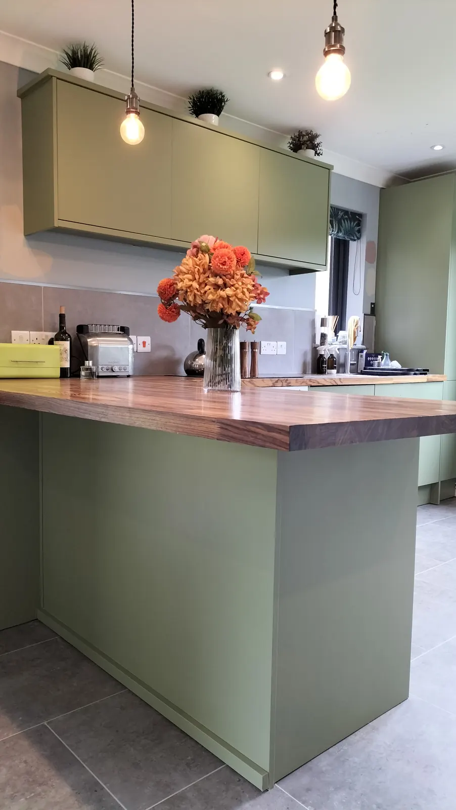
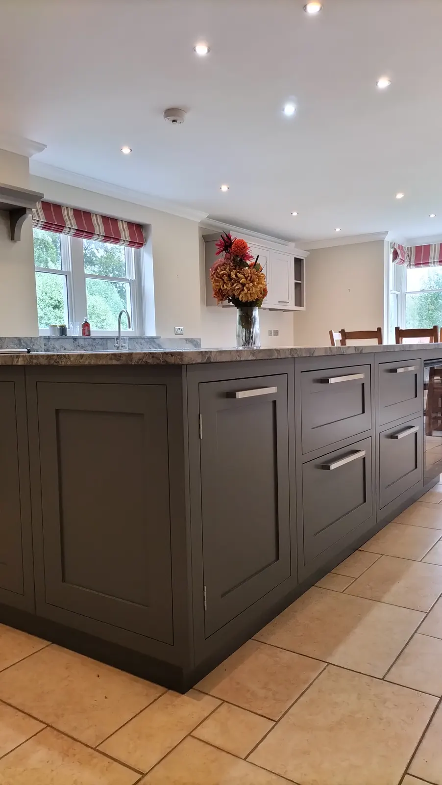
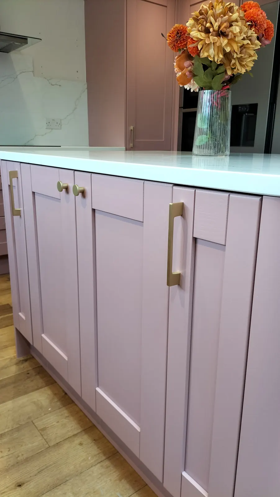

Choosing the colour is the fun part — and the part people worry about most. So rather than guess at trends, here are the actual colours we’ve sprayed for clients across Hampshire, grouped by family. We can colour match any of them, or anything else from Dulux, Farrow & Ball, Little Greene, Edward Bulmer or your own swatch.
Greens
Green is one of the most popular kitchen colours right now, from soft sages to deep, moody greens.
- Farrow & Ball Studio Green — Andover & Petersfield
- Farrow & Ball Smoke Green — Petersfield
- Farrow & Ball Vert de Terre — Romsey
- Little Greene Fescue — Sutton Scotney
- Little Greene Salix — Fareham
- Dulux Heritage Sage Green — Basingstoke

Blues
From inky navy to soft blue-greys, blue works in both modern and traditional kitchens.
- Farrow & Ball Hague Blue — Southampton
- Farrow & Ball Stiffkey Blue — Alton & Fareham
- Farrow & Ball Inchyra Blue — Farnham
- Farrow & Ball Dix Blue — Alton
- Little Greene Docks Blue — Winchester

Greys and stones
Easy to live with and a good match for most worktops.
- Farrow & Ball Pavilion Grey — Winchester
- Farrow & Ball Mole’s Breath — Alton
- Farrow & Ball Plummet — Southampton
- Farrow & Ball Purbeck Stone — Alton
- Farrow & Ball Skimming Stone — Andover
- Farrow & Ball London Stone — Romsey
- Little Greene French Dark Grey — Romsey & Southampton
- Little Greene Lead — Petersfield
- Valspar Silver Tarnish — Winchester
Blacks and near-blacks
Dramatic on an island, or for a whole kitchen with brass or copper handles.
- Farrow & Ball Off-Black — Winchester & Southampton
- Farrow & Ball Paean Black — Southampton
- Farrow & Ball Downpipe — Stockbridge

Pinks
Dusky pinks with brass handles have become one of our favourite transformations.
- Farrow & Ball Peignoir — Basingstoke
- Dusky pink with brass handles — Bishops Waltham & Waterlooville

Whites, creams and warm neutrals
Timeless, light-reflecting, and ideal for smaller or darker kitchens.
- Farrow & Ball Wevet — Winchester
- Farrow & Ball School House White — Alton
- Farrow & Ball Wimborne White — Southampton
- Farrow & Ball Portland Stone — Farnham
- Dulux Cashmere — Farnham
- Dulux Ivory Lace — Fareham
- Dulux Summer Rain & River Bed — Petersfield
- Johnstone’s Oat Biscuit — Petersfield
- Albany Litlington — Basingstoke
- Little Greene Puck — Farnham
Tips for choosing your kitchen colour
Check the light
North-facing kitchens get cooler light, so blues and greys can look colder than on the chart — warmer greens, stones and pinks often work better. South-facing kitchens can take almost anything.
Think about your worktop and floor
These stay the same after a respray, so choose a colour that works with them. Bring a sample next to the worktop in daylight and in the evening.
Consider two tones
A darker island or lower units with lighter wall units adds depth without darkening the room.
Change the handles while the doors are off
New handles are the finishing touch, and a respray is the perfect time to change them.
Ask for a free colour consultation
We’ll bring swatches and samples to your home and give honest advice — it’s included free with every quote. See the finished results in our before & after guide.
We work predominantly in Hampshire
We’re a local, family-run team based near Botley, so most of our kitchens are in Hampshire and just over its borders — Winchester, Southampton, Eastleigh, Chandler’s Ford, Hedge End, Romsey, Andover, Basingstoke, Alton, Petersfield, Fareham, Waterlooville and the villages in between.
Further afield? Get in touch anyway — we’ll happily travel for the right kitchen.